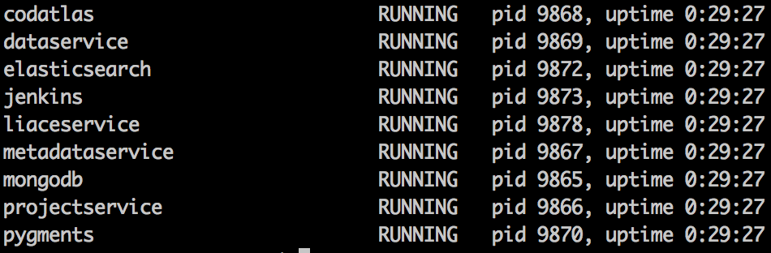

Codatlas Private Cloud Version Quick Install¶
Intro¶
This document is a step-by-step guide to install Codatlas on your private cloud server.
Prerequisites¶
In order to install Codatlas, make sure you have the following pre-requisites before you start:
- A invitation key sent from lambdalab@lambdalab.io
- An Ubuntu machine with root access. Note that port80(http), port443(https) and port22(ssh) need to be opened.
Installation¶
Download Package and Initial Setup¶
SSH to the Ubuntu machine. Replace $invitationKey with the invitation key you received from lambdalab@lambdalab.io, type the following command into a bash terminal, the script will download the binary and run nessesary intial configuration. Please select “Y” to any prompted confirmation.
bash <(curl -sSL http://enterprise.codatlas.com/install?key=$invitationKey)
An optional argument ‘region’ could be used to optimize download speed, the value could be ‘cn’ or ‘us’, e.g.
bash <(curl -sSL "http://enterprise.codatlas.com/install?key=$invitationKey®ion=cn")
Start Processes and Validate Installation¶
Codatlas uses supervisord to manage the processes and services. To validate all processes are running normally, check supervisord status by running:
supervisorctl status
and make sure that the output screen looks like this:
For more details about managing Codatlas processes with supervisord, please refer to Process Management chapter of the documentation.
Open a browser and try to access the public DNS of the server with http protocal. For example, if you are using AWS as your cloud service, this address may look like:
http://ec2-52-35-135-191.us-west-2.compute.amazonaws.com
verify that you can see Codatlas home page as showing below:

You are done with the setting up Codatlas if you are not using it with Github Integration. Please refer to User Guide for details on how to use it.
Configure Github Integration¶
This section is only necessary if you want to integrate Codatlas with Github, it’s highly recommended if you use Github as your code hosting service.
Log into your github account and go to Settings then OAuth applications then Developer applications tab.
Click on Register new application button and fill in Application name and Application description section with preferred text. Fill in Homepage URL and Authorization callback URL with public DNS of the server, e.g. http://ec2-52-35-135-191.us-west-2.compute.amazonaws.com. Click Register Application to create a new OAuth application. Note Client ID and Client Secret Github provided with the newly created application.
Go back to the bash terminal, open and edit the application-enterprise.conf file:
vi $HOME/lambda_enterprise_home/codatlas/conf/application-enterprise.conf
And change ClientId and ClientSecret fields of both github-private and github sections to be the Client ID and Client Secret of your github application you just created:
github-private {
authorizationUrl="https://github.com/login/oauth/authorize"
accessTokenUrl="https://github.com/login/oauth/access_token"
clientId=f261b8d12f1a8ac16f2a
clientSecret=989acad6e4df128ab8c2dc0ee3a5672a9e1ffe5a
scope="user:email,repo"
}
github {
authorizationUrl="https://github.com/login/oauth/authorize"
accessTokenUrl="https://github.com/login/oauth/access_token"
clientId=d1d8e43a14e1f3e1e2d8
clientSecret=ac383f2f378015a06d8d55ef340a029d4314ec0f
scope="user:email,public_repo"
}
After the change, restart Codatlas process:
supervisorctl restart codatlas
Go back to your browser and go to Codatlas Home Page, click on Login button on the top right, and then click on Login with Github, make sure you can successfully login with your Github account.
You are done with integrate Codatlas with Github! Please refer to User Manual for details on how to use it.